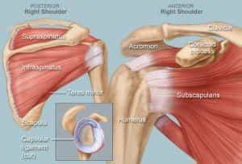
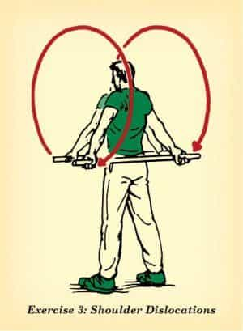
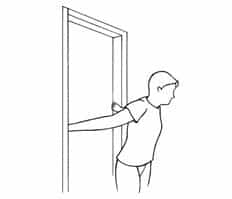
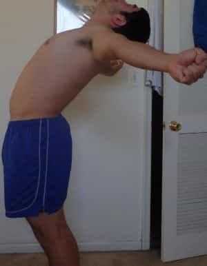
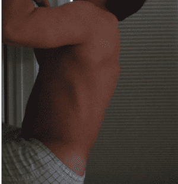

< < < Back
4 Ways To Improve Shoulder Mobility – Return Of Kings
I, and presumably most of the people reading my articles, are big fans of weight training and rigorous calisthenics. And who can blame us? Resistance training increases size and strength, makes you more physically capable, makes you more attractive to the opposite sex, increases production of androgens, and increases confidence and self-esteem.
But, like all physical activities, there is a risk of injury and long-term physical ailments-improper lifting technique can lead to blown out knees, rotator cuff injury, and slipped vertebral discs, but even relatively proper lifting can lead to repetitive stress injuries such as the ailment commonly known as “lifter’s shoulder”

And even if you don’t have pain, the shoulders also bear a risk of getting “gorilla posture”-this occurs when a novice weightlifter focuses too much on the front of his torso (doing bench presses, overhead presses, push-ups, etc.) without properly training his back muscles and/or stretching the muscles of the chest, giving him shoulders that hunch inward despite their breadth.
Many, but certainly not all, lifters will find themselves with cracking and popping shoulders at the very least, and lingering shoulder pain at the worst. Those same lifters will often “Grit through” the pain, a futilely valiant gesture that sometimes leads to long term injury.
I myself have never had any serious injury from weightlifting, but I have suffered from cracking and popping shoulders. And, seeking a way to resolve this problem, I came across a series of stretches (and one calisthenic exercise) that can reduce pain in your shoulders
1. The Stick Stretch
The stick stretch (dubbed the shoulder dislocation on the Art of Manliness where I found this picture) is one that seems to be making the rounds on fitness websites and in magazines as of late, but I have always been one to not dismiss something just because it has grown in popularity-simply put, this stretch is great for your shoulder and pectoral mobility.
To do this stretch, get a pole, cane, broomstick, pipe, or some other rigid object of sufficient length (4-5 feet long is what I would reconmend). Take a hold of the pole with your palms facing outward. Keep your arms straight, lock your elbows, and SLOWLY lift the pole up and over your head, touch the back, and back over the head and touch your stomach.
Do 10 repetitions of this to start with, and increase later on. I would start out with as wide a grip as possible, and once you develop more flexibility, you can move your hands closer together-but remember to always keep your arms straight. Moving your arms around can lead to pulling of the pectoral muscle, which of course defeats the purpose of stretching.

2. The Door Stretch
This is another stretch that targets the chest and shoulders, but in a different range of motion than the aforementioned stick stretch. For this stretch, stand slightly outside a door frame, straighten your arms, and reach them back behind you and grab the door frame.

Then, keeping the body straight and erect, shift the weight forward and lean, while keeping a hold of the door frame. You will feel a stretch in your pectorals and shoulders. Hold the stretch for 10-20 seconds, and then lean back. Repeat if necessary.
3. The Chest Stretch
This is a stretch that I have discussed before (As have other writers in this genre), but it’s worth repeating-not the least because it requires absolutely no equipment whatsoever.
Stand up and put your feet together. Placing your hands on your hips, thrust the hips forward while looking up towards the ceiling. While keeping your balance, remove your hands from your hips and spread your arms out from your chest, keeping the arms straight and “opening” the chest as wide as possible.
The key to this stretch is to keep your arms straight while NOT locking your elbows-keep them “loose”. As usual, if you feel pain rather than a stretch, you’re doing it wrong.

Those three stretches are quite effective for shoulder and chest mobility-indeed, doing these stretches 2-3 times a week will make your chest and shoulders look a little bit broader and improve your posture, and many will stop at this goal. But if you really want to strengthen the shoulder girdle and ensure that you won’t have rotator cuff injuries in the future, you’re going to want to utilize the timeless art of gymnastics.
4. “SKIN THE CAT”
Skinning the cat is a gymnastic static hold, that actually represents the first, most basic step of the back body lever.

All of these holds will produce the same effect on your shoulders, but for the sake of ease, I will only instruct you on the easiest hold. Note that this is just a quick overview of the skill, and a full explanation of it (As well as steps to build up to it) will be for another article.
Grab a hold of a pull-up bar or a tree branch with the palms facing forward.

Then, using the strength of your abdominals, lift the feet up and pull them “through” the gap in your arms

From here, I rotated through to parallel. The picture consisted of my ass sticking out of a door jamb, so I didn’t include it.
Continue rotating until you can’t rotate anymore (you’ll feel your arms stop rotating.) Your stomach will be parallel to the floor
And hold. You will likely only be able to do a few seconds at first, just rotate back before you lose your grip and fall flat on your face.
The first time I worked any sort of back lever, I immediately noticed a reduction in shoulder popping and cracking. In addition, the next day I felt the proverbial “soreness in muscles I didn’t know I had”.
Conclusion
If cracking shoulders can be considered an inevitability of weight training, lifters around the world should know that they can be overcome (or at the very least reduced). These four exercises can make great inroads in doing so.
Read More: 5 Ways To Improve High School Gym Class